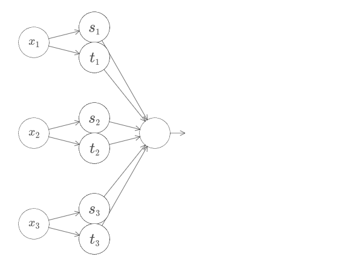

뉴럴 네트워크에 대한 가장 눈에 띄는 사실 중 하나는 어떠한 함수도 계산할 수 있다는 점이다.
누군가 당신에게 꾸불꾸불한 모양의 다소 복잡한4 함수 $f(x)$를 주었다고 가정하자.
함수가 무엇이든지 상관없이 뉴럴 네트워크가 되는 것이 보장되므로 모든 가능한 입력 $x$에 대한 값 $f(x)$ (또는 근사값)는 네트워크의 출력이다.
예를 들면 다음과 같다.
함수가 많은 수의 입력과 출력을 가지더라도 즉 $f = f(x_1, \ldots, x_m)$이라도 이 결과는 유효하다.
예를다르 입력의 수 $m = 3$이고 출력의 수 $n = 2$인 함수를 계산하는 네트워크가 아래에 있다.
이 결과를 통해 뉴럴 네트워크는 일종의 보편성 universality를 가진다고 말할 수 있다.
계산하고자 하는 함수가 무엇이든지 그 일을 수행할 수 있는 뉴럴 네트워크는 존재한다.
게다가 입력과 출력 뉴런 사이에 단 하나의 중간 층 소위 말하는 하나의 은닉층만 갖도록 네트워크를 제한해도 보편성 정리는 성립한다. 그래서 아주 단순한 네트워크 구조라도 매우 강력한 능력을 지닌다.
이 보편성 이론은 뉴럴 네트워크를 사용하는 사람들 사이에서 잘 알려져 있다.
하지만 왜 성립하는지에 대해서는 널리 이해하지 못하고 있다.
대부분의 가능한 설명은 다소 기술적이다.
예를 들어 그 결과를 증명하는 논문 중 하나*
Approximation by superpositions of a sigmoidal function, by George Cybenko (1989).
The result was very much in the air at the time,
and several groups proved closely related results.
Cybenko's paper contains a useful discussion of much of that work.
Another important early paper is
Multilayer feedforward networks are universal approximators,
by Kurt Hornik, Maxwell Stinchcombe, and Halbert White (1989).
This paper uses the Stone-Weierstrass theorem to arrive at similar results.
는 한-바나흐 정리Hahn-Banach theorem, 리스 표현 정리Riesz Representation theorem, 푸리에 분석Fourier analysis을 이용하고 있다.
당신이 수학자라면 그 주장을 이해하기 어렵지 않지만 대부분의 사람들에게는 쉽지 않다.
보편성에 대한 근본적인 이유는 간단하고 아름답기 때문에 이는 유감스러운 일이다.
이 장에서는 보편성 정리에 대한 간단하고 시각적인 설명을 제시할 것이다. 근본적인 아이디어를 단계적으로 살펴볼 것이다. 왜 뉴럴 네트워크가 어떠한 함수도 계산할 수 있는지에 대해 이해할 수 있을 것이다. 결과의 한계에 대해 이해하고 그 결과가 어떻게 딥 뉴럴 네트워크와 연관되는지 이해할 것이다.
이 장의 내용을 따라가기 위해서 책의 앞 장 내용이 필요하지는 않다. 대신 이 장은 독립적인 에세이로 즐길 수 있도록 구성하였다. 뉴럴 네트워크에 대한 아주 기본적인 지식만 있더라도 이 설명을 따라갈 수 있을 것이다. 하지만 당신의 지식에 차이를 줄이기 위해 이전의 내용을 링크로 제시할 것이다.
보편성 정리는 컴퓨터 과학에서 흔한 일이므로 우리는 그것이 얼마나 놀라운지 종종 까먹는다.
하지만 스스로 되내어 볼 필요가 있다.
임의의 함수를 계산할 수 있는 능력은 정말 놀랍다.
당신이 상상할 수 있는 거의 모든 프로세스를 함수 계산으로 생각할 수 있다.
음악 작품의 아주 짧은 샘플을 기반으로 작품 제목을 짓는 문제를 고려해보자.
그것은 함수를 계산하는 것으로 생각할 수 있다.
또는 중국어 문자를 영어로 번역하는 문제를 생각해보자.
이것 또한 함수를 계산*
Actually, computing one of many functions,
since there are often many acceptable translations of a given piece of text.
하는 것으로 여길 수 있다.
또는 mp4 영화 파일을 가져와서 영화 줄거리를 생성하고 연기가 어떤지 토론하는 문제를 생각해보자.
이것 또한 일종의 함수 계산으로 생각*
Ditto the remark about translation and there being many possible functions.
할 수 있다.
이론적으로 보편성은 뉴럴 네트워크가 이 모든 것을 할 수 있고 혹은 더 많은 것을 할 수 있다는 의미이다.
물론 가령 중국어 문자를 영어로 번역할 수 있는 뉴럴 네트워크가 존재한다는 사실을 알고 있기 때문에 그러한 네트워크를 만들거나 인지하는데 좋은 기술이 있어야 한다는 것을 의미하지 않는다. 이 한계는 또한 부울 회로Boolean circuits과 같은 모델에 대한 전통적인 보편성 정리에도 적용된다. 하지만 이 책의 앞 부분에서 보았듯이 뉴럴 네트워크는 학습 함수에 대한 강력한 알고리즘을 지니고 있다. 학습 알고리즘과 보편성의 조합은 아주 매력적이다. 지금까지의 책 내용은 학습 알고리즘에 초점을 맞추었다. 이 장에서는 보편성에 초점을 맞추어 보편성이 무엇을 의미하는지 살펴보겠다.
보편성 정리가 왜 사실인지 설명하기 전에 "뉴럴 네트워크는 어떠한 함수도 계산할 수 있다"는 말에 대한 두 가지 경고를 언급하고자 한다.
먼저 네트워크가 어떤 함수를 정확히 계산할 수 있다는 의미가 아니다.
대신 원하는 만큼 좋은 근사값을 가질 수 있다.
은닉 뉴런의 수를 늘려 근사값을 향상시킬 수 있다.
예를 들어 이전에 세 개의 은닉 뉴런을 이용해 함수 $f(x)$를 계산하는 네트워크를 설명했다.
대부분의 함수에 대해서 세 개의 은닉 뉴런을 사용하면 좋지 못한 근사값만 얻을 수 있다.
(가령 5개로) 은닉 뉴런의 수를 늘리면 전형적으로 더 나은 근사값을 가질 수 있다.

그리고 은닉 뉴런의 수를 더 늘리면 더 나은 성능을 얻을 수 있다.
이 진술을 더 정확히하기 위해 정확도 $\epsilon > 0$가 원하는 값 안에 들어오도록 함수 $f(x)$를 계산하고 싶다고 가정하자. 충분히 많은 수의 은닉 뉴런을 사용하면 모든 입력 $x$에 대해 출력 $g(X)$가 $|g(x) - f(x)| < \epsilon$을 만족하는 뉴럴 네트워크를 찾을 수 있다. 즉 근사값은 가능한 모든 입력에 대하 원하는 정확도 안에 들어오도록 할 수 있을 것이다.
두 번째 경고는 근사될 수 있는 함수의 클래스는 연속 continuous함수라는 점이다. 함수가 불연속이면 즉 갑자기 날카롭게 점프하는 구간이 있으면 일반적으로 뉴럴 네트워크를 이용해 근사할 수 없다. 뉴럴 네트워크가 입력에 대한 연속 함수를 계산하기 때문에 이는 그렇게 놀랍지 않다. 하지만 계산하고자 하는 함수가 불연속이더라도 연속 근사값continuous approximation이 충분히 좋은 경우가 있다. 그런 경우라면 뉴럴 네트워크를 사용할 수 있다. 실제로 이는 보통 중요한 한계점이 아니다.
요약해서 보편성 정리를 더 정확히 진술하면 다음과 같다. 하나의 은닉층을 가지는 뉴럴 네트워크는 어떤 연속 함수를 원하는 어떤 정확도로 근사하기 위해 사용될 수 있다. 이 장에서 이 결과의 하나 대신에 두 개의 은닉층을 사용하는 조금 더 약한 버전을 증명할 것이다. 문제에서 약간의 수정을 가해 어떻게 설명이 하나의 은닉층을 사용하는 경우의 증명에도 적용될 수 있는지 간략하게 설명할 것이다.
보편성 정리가 왜 성립하는지 이해하기 위해 단 하나의 입력과 하나의 출력을 가지는 함수를 근사하는 뉴럴 네트워크를 어떻게 구성하는지 이해하는 것으로 시작해보자.
이는 보편성 문제의 핵심이다.
일단 이 특수한 경우를 이해하면 많은 수의 입력과 출력을 가지는 함수에 대해 쉽게 확장할 수 있다.
함수 $f$를 계산하는 네트워크를 어떻게 구성할지에 대한 통찰력을 키우기 위해 두 개의 은닉 뉴런을 가지는 하나의 은닉층과 하나의 출력 뉴런을 포함하는 출력층으로 구성된 네트워크를 살펴보자.
네트워크의 구성요소가 어떻게 작동하는지 감을 잡기 위해 가장 위에 있는 은닉 뉴런부터 살펴보자.
[원문에서 동적으로 이용가능]
아래의 다이어 그램에서 가중치 $w$를 클릭하고 마우스를 오른쪽으로 드래그하여 $w$를 증가시킬 수 있다.
위쪽 은닉 뉴런에서 계산되는 함수 값이 어떻게 변하는지 즉시 살펴볼 수 있다.

[위 이미지는 자바스크립트로 바꾸어야 한다]
이전에 배운 것처럼 은닉 유런이 계산하는 것은 $\sigma(wx + b)$이고 여기서 $\sigma(z) \equiv 1/(1+e^{-z})$은 시그모이드 함수이다.
지금까지 이 수학식을 자주 사용했다.
하지만 보편성을 증명하기 위해 수학식을 완전히 무시한 채로 더 나은 통찰력을 얻을 것이다.
그리고 대신에 그래프에서 볼 수 있는 모양을 관찰하고 조작해 볼 것이다.
이는 어떤 일이 일어나는지에 대한 더 나은 감을 줄 뿐만 아니라 시그모이드 함수가 아닌 다른 활성화 함수에도 적용할 수 있는 보편성의 증명*
Strictly speaking, the visual approach I'm taking
isn't what's traditionally thought of as a proof.
But I believe the visual approach gives more insight
into why the result is true than a traditional proof.
And, of course, that kind of insight is
the real purpose behind a proof.
Occasionally, there will be small gaps in the reasoning I present:
places where I make a visual argument that is plausible,
but not quite rigorous.
If this bothers you,
then consider it a challenge to fill in the missing steps.
But don't lose sight of the real purpose:
to understand why the universality theorem is true.
을 제시할 것이다.
증명을 시작하기 위해 위의 다이어그램에서 편향 $b$를 클릭하고 오른쪽으로 드래그하여 값을 증가시키자. 편향이 증가하면서 그래프가 왼쪽으로 이동하는 것을 볼 수 있다. 하지만 그래프 모양은 변하지 않는다.
다음으로 편향을 클릭하고 왼쪽으로 드래그하여 감소시켜 보자. 편향이 감소하면서 그래프는 오른쪽으로 이동하는 것을 볼 수 있지만 모양은 여전히 변하지 않는다.
다음으로 가중치를 $2$ 또는 $3$으로 감소시키자. 가중치가 감소하면서 곡선이 퍼지는 것을 볼 수 있다. 곡선을 프레임 안에 위치시키기 위해 편향도 바꾸어야 할 수도 있다.
마지막으로 가중치를 $100$보다 더 크게 증가시켜 보자. 그러면 곡선의 경사는 급해지고 결국 계단 함수처럼 보이기 시작한다.
출력이 실제로 계단함수가 되도록 가중치를 크게 증가시켜 좋은 근사값에 대한 분석을 꽤 단순하게 만들 수 있다.
가중치가 $999$일 때 가장 위에 있는 은닉 뉴런의 출력 값을 아래 그래프에 나타내었다.
이 그래프는 정적이며 가중치와 같은 파라미터를 바꿀 수 없다.

일반적인 시그모이드 함수보다 계단 함수를 이용하는 것이 훨씬 쉽다.
모든 은닉 뉴런에 대한 기여를 출력 층에서 모두 합하기 때문이다.
계단 함수의 합을 분석하는 것은 쉽지만 시그모이드 모양의 곡선을 합할 때 무슨 일이 일어나는지 추론하는 것은 훨씬 어렵다.
그러므로 은닉 뉴런이 계단 함수를 출력한다고 가정하는 것이 훨씬 편하다.
더 구체적으로 가중치 $w$를 어느 정도 큰 값을 갖도록 고치고 편향을 수정하여 계단의 위치를 설정한다.
물론 출력을 계단 함수로 다루는 것은 근사값이지만 매우 좋은 근사값이고 당분가 이 값을 정확하다고 다룰 것이다.
후에 이 근사값으로부터의 편차에 의한 영향에 대해 논의하겠다.
x 값이 무엇일 때 계단이 일어날까? 다시 말해 계단의 위치는 어떻게 가중치와 편향에 의존할까?
이 질문에 답하기위해 위 다이어그램에서 가중치와 편향을 수정해보자. 계단의 위치가 어떻게 $w$와 $b$에 의존하는지 알 수 있는가? 조금만 살펴보면 계단의 위치는 $b$에 비례하고 $w$에 반비례한다는 사실을 알 수 있다.
사실 계단의 위치는 $s = -b/w$이다.
아래의 다이어 그램에서 가중치와 편향을 수정하여 계단의 위치를 볼 수 있다.
[아래 그림도 자바스크립트로 바꿔야 한다.]
이는 단 하나의 파라미터 $s$를 사용하여 은닉 뉴런을 표현할 수 있을 정도로 단순화시켜 준다.
여기서 $s$는 계단위치 $s = -b/w$이다.
아래 다이어그램의 $s$를 수정하여 새로운 파라미터에 익숙해져 보자.
[아래 그림도 자바스크립트로]
위에서 본 것처럼 입력에 대한 가중치 $w$를 암묵적으로 다소 큰 값으로 설정했다.
계단 함수가 좋은 근사값이 되도록 큰 값으로 설정했다.
이러한 방식의 파라미터로 나타낸 뉴런을 편향 $b = -w s$으로 쉽게 원래의 모델로 바꿀 수 있다.
지금까지 단지 위쪽 은닉 뉴런의 출력에만 초점을 맞추었다.
이제 전체 네트워크의 행동에 대해 살펴보자.
특히 은닉 뉴런이 계단 $s_1$ (위쪽 뉴런)과 $s_2$(아래쪽 뉴런)으로 나타내어진 계단함수를 계산한다고 가정하자.
그리고 각각 출력 가중치 $w_1$과 $w_2$를 가진다.
아래에 네트워크가 나타나 있다.
[자바스크립트로 바꾸기]
오른쪽에 나타난 그래프는 은닉 층에서 나온 가중치 출력 $w_1 a_1 + w_2 a_2$이다.
여기서 $a_1$과 $a_2$는 각각*
Note, by the way, that the output from the whole network is σ(w1a1+w2a2+b),
where b is the bias on the output neuron.
Obviously, this isn't the same as the weighted output from the hidden layer,
which is what we're plotting here.
We're going to focus on the weighted output from the hidden layer right now,
and only later will we think about how that relates to the output from the whole network.
이러한 출력은 뉴런의 활성화 activations로 알려져 있으므로 $a$로 표기한다.
위쪽 은닉 뉴런의 계단 점 $s_1$을 증가시키거나 감소시켜 보자. 이것이 어떻게 은닉 층의 가중치 출력을 변화시키는지 감을 잡아 보자. 특히 $s_1$이 $s_2$보다 커질 때 무슨 일이 일어나는지 이해할 필요가 있다. 이때 그래프의 모양이 바뀐다는 것을 볼 수 있을 것이다. 위쪽 은닉 뉴런이 먼저 활성화되는 상황에서 아래쪽 은닉 뉴런이 먼저 활성화되는 상황으로 바뀌기 때문이다.
비슷하게 아래쪽 은닉 뉴런의 계단 점 $s_2$를 바꿔 보면서 은닉 뉴런의 출력 조합이 어떻게 바뀌는지 알아보자.
각 출력 가중치를 증가시키거나 감소시켜 보자. 이것이 각각의 은닉 뉴런으로 부터 기여가 어떻게 바뀌는지 주의하자. 가중치 중 하나가 $0$이 되면 무슨 일이 일어나는가?
마지막으로 $w_1$은 $0.8$로 설정하고 $w_2$는 $-0.8$로 설정하자.
점 $s_1$에서 시작하고 $s_2$에서 끝나며 높이는 $0.8$인 "범프bump" 함수를 얻을 것이다.
예를 들어 가중치 출력은 아래와 같다.

물론 범프의 크기를 재조정하여 어떠한 높이를 갖도록 만들 수 있다.
높이를 표시하기 위해 하나의 파라미터 $h$를 사용하자.
어수선함을 줄이기 위해 "$s_1 = \ldots$"과 "$w_1 = \ldots$"과 같은 표기를 제거할 것이다.
[자바스크립트로]
$h$ 값을 위, 아래로 바꿔가면서 범프의 높이가 어떻게 변화는지 관찰해 보자.
높이를 음수로 바꾸면 무슨 일이 일어나는지 보자.
그리고 계단 점을 바꿔가면서 범프의 모양이 어떻게 변하는지 살펴보자.
한편 뉴런을 단지 그래프의 항으로 생각할 수 있을 뿐만 아니라 if-then-else문 같은 전형적인 프로그래밍 항으로도 사용할 수 있다는 것을 깨달았을 것이다.
if input >= step point:
add 1 to the weighted output
else:
add 0 to the weighted output
if-then-else로 생각하는 것이 유용할 것이다.
은닉 뉴런의 두 쌍을 함께 같은 네트워크에 묶어서 두 개의 범프를 가지도록 속임수를 쓸 수 있다.
[자바스크립트]
여기서 가중치를 표시하지 않았고 간단하게 각 은닉 뉴런의 쌍에 대한 $h$값을 표시했다.
두 개의 $h$ 값을 바꿔가면서 $h$가 어떻게 그래프를 바꾸는지 관찰하자.
계단 점을 바꿔서 범프를 이동시켜 봐라.
더 일반적으로 이 아이디어를 이용해서 어떤 높이를 갖는 범프를 원하는 만큼 많이 만들 수 있다.
특히 구간 [0, 1]을 $N$개의 부분 구간으로 나눌 수 있고 은닉 뉴런 $N$쌍을 이용해 어떤 원하는 높이를 갖도록 설정할 수 있다.
$N = 5$일 때 이것이 어떻게 동작하는지 살펴보자.
꽤 많은 수의 뉴런이 있어서 약간 촘촘하게 묶어야 한다.
다이어그램이 다소 복잡한 점 이해해주길 바란다.
더 추상화시켜서 복잡함을 없앨 수도 있지만 네트워크가 어떻게 동작하는지 구체적으로 이해하기 위해서 다소 복잡하게 표현할 필요도 있다.
[자바스크립트]
은닉 뉴런 다섯 쌍이 있다.
각 뉴런 쌍에 대한 계단 점은 $0, 1/5$와 $1/5, 2/5$에서 $4/5, 5/5$까지이다.
그 값들은 고정되어 있고 이 점들은 균등한 공간을 가지는 범프를 만든다.
각 뉴런 쌍은 관련된 $h$ 값을 가진다. 뉴런이 출력하는 연결은 가중치 $h$와 $-h$ (표시하지 않음)를 가진다는 것을 기억하자. $h$ 값 중 하나를 클릭하고 오른쪽 혹은 왼쪽으로 드래그하여 값을 바꿔보자. 그러면서 함수가 바뀌는 것을 주의깊게 보자. 출력 가중치를 바꾸면서 실제로 우리는 함수를 설계하고 있는 것이다.
그와 반대로 그래프를 클릭해 위아래로 드래그하면서 범프의 높이를 바꿔보자. 높이를 바꿀 때 대응하는 $h$ 값도 바뀌는 것을 볼 수 있다. 그리고 눈에 보이진 않지만 대응하는 출력 가중치에서도 $+h$와 $-h$만큼 변하한다.
즉 오른쪽 그래프에 있는 함수를 직접 조정하면 왼쪽에 $h$ 값이 직접 반영된다. 재밌는 것은 마우스를 클릭한 채로 그래프의 한 쪽에서 다른쪽으로 드래그해 볼 수 있다는 점이다. 이렇게 해서 함수를 그려보고 뉴럴 네트워크를 조정하는 파라미터를 볼 수 있다.
한 번 도전해보자.
이 장의 제일 앞부분에서 보여준 함수로 돌아가보자.
그때 말하지는 않았지만 그 함수는 다음과 같다.
$$\begin{eqnarray}
f(x) = 0.2+0.4 x^2+0.3x \sin(15 x) + 0.05 \cos(50 x),
\tag{113}\end{eqnarray}$$
$x$가 $0$에서 $1$일 때 위 함수를 그린 그래프이고 $y$ 축은 $0$에서 $1$사이의 값을 갖는다.
이는 분명 쓸데 없는 사소한 함수가 아니다.
뉴럴 네트워크를 이용해서 이를 어떻게 계산하는지 살펴볼 것이다.
위의 네트워크에서 은닉 뉴런의 출력인 가중치 조합 $\sum_j w_j a_j$을 분석했다. 이제 이 양을 어떻게 통제하는지 알고 있다. 하지만 이전에 말한 것처럼 이 양은 네트워크의 출력이 아니다. 네트워크의 출력은 $\sigma(\sum_j w_j a_j + b)$이며 여기서 $b$는 출력 뉴런의 편향이다. 네트워크의 실제 출력을 통제할 수 있는 방법이 있을까?
은닉 뉴런이 가중치 출력 $\sigma^{-1} \circ f(x)$을 갖도록 뉴럴 네트워크를 설계하는 것이 해결 방법이다.
여기서 $\sigma^{-1}$은 $\sigma$함수의 역함수이다.
즉 은닉 뉴런의 가중치 출력이 다음과 같도록 만들고자 한다.
이렇게 할 수 있다면 네트워크의 전체 출력은 $f(x)$에 대한 좋은 근사값*
Note that I have set the bias on the output neuron to 0.
이 될 것이다.
그러면 문제는 방근 위에서 보여준 목표 함수를 근사하도록 뉴럴 네트워크를 설계하는 것이다. 가능한 많이 공부하기 위해 문제를 두 번정도 풀어보길 권장한다. 첫 번째로 풀 때는 그래프를 클릭하고 서로 다른 범프 함수의 높이를 직접 조정해 보자. 목표 함수와 잘 맞는 것을 쉽게 알 수 있을 것이다. 얼마나 잘 하고 있는지 측정하기 위해서는 목표 함수와 네트워크가 실제로 계산하는 함수 사이의 평균 편차 average deviation을 이용한다. 평균 편차가 가능한 작도록만드는 것이 문제이다. 평균 편차가 $0.40$ 또는 그 보다 작으면 문제를 풀었다고 볼 수 있다.
일단 완료하면 "리셋" 번튼을 클릭해서 범프를 다시 초기화시키자.
두 번째 문제를 풀 때는 그래프를 클릭하지 말자.
대신에 왼쪽에 있는 $h$ 값을 수정해서 평균 편차가 $0.40$ 또는 그보다 작도록 만들자.
이제 근사적으로 함수 $f(x)$를 계산하기 위한 네트워크의 필수 구성 요소를 모두 살펴보았다.
이는 아주 대략적인 근사이지만 은닉 뉴런 쌍의 수를 늘려 범프의 수를 증가시키면 쉽게 더 나은 근사를 할 수있다.
특히 모든 데이터를 뉴럴 네트워크에서 사용하는 표준 파라미터화standard parameterization로 쉽게 변환할 수 있다. 어떻게 하는지 짧게 살펴보자.
첫 번재 층의 모든 가중치는 매우 큰 상수 값, 가령 $w = 1000$과 같은 값을 지닌다.
은닉 뉴런에 대한 편향은 단지 $b = -w s$이다. 예를 들어 두 번째 은닉 뉴런에 대해 $s = 0.2$이면 $b = -1000 \times 0.2 = -200$이 된다.
마지막 층의 가중치는 $h$값에 의해 결정된다. 예를 들어 첫 번째 $h$ 값에 대해 $h =$ -0.1를 선택했다면 위쪽 두 개의 은닉 뉴런의 출력인 가중치는 각각 -0.1와 0.1라는 의미이다. 전체 층에 대한 출력 가중치를 같은 방법으로 계산할 수 있다.
마지막으로 출력 뉴런에 대한 편향은 $0$이다.
이게 전부다. 이제 원래의 목표 함수를 잘 계산하는 뉴럴 네트워크를 완전히 구성했다. 그리고 은닉 뉴런의 수를 향상시켜 근사값을 어떻게 개선하는지 이해했다.
게다가 원래의 목표 함수 $f(x) = 0.2+0.4 x^2+0.3 \sin(15 x) + 0.05 \cos(50 x)$에는 특별한 것이 없다. 이러한 과정을 [0, 1]에서 [0, 1]의 범위를 갖는 어떤 연속 함수에 대해서도 사용할 수 있다. 본질적으로 함수에 대한 테이블lookup table을 구축하기 위해 단층 뉴럴 네트워크를 사용하고 있다. 그리고 이 아이디어를 이용해 보편성의 일반적인 증명을 할 수 있을 것이다.
우리의 결과를 입력 변수의 수가 많은 경우로 확장시켜 보자. 이는 복잡하게 들릴지도 모르지만 필요한 모든 아이디어는 두 개의 입력을 가질 때와 동일하다. 그러므로 두 개의 입력을 가지는 경우를 다뤄보자.
뉴런에 두 개의 입력이 있을 때 무슨 일이 일어나는지 먼저 살펴보자.
여기서 입력 $x$와 $y$가 있고 상응하는 가중치 $w_1$, $w_2$ 그리고 뉴런에 대한 편향 $b$가 있다.
가중치 $w_2$를 $0$으로 두고 첫 번째 가중치 $w_1$과 편향 $b$를 바꿔가면서 뉴런의 출력에 어떤 영향을 주는지 보자.
[자바스크립트]
보다시피 $w_2 = 0$이면 입력 $y$는 뉴런의 출력에 아무런 영향을 주지 않는다.
$x$가 유일한 입력인 것과 마찬가지이다.
$w_1$은 $100$으로 증가시키고 $w_2$는 그대로 $0$으로 유지시키면 무슨 일이 일어날까? 곧 바로 답이 생각나지 않는다면 잠시 질문에 대해 생각해보자. 그리고 무슨 일이 일어날지 알아내 보자. 그런 다음 그 답이 맞는지 확인하자. 아래의 비디오는 무슨 일이 일어나는지 보여준다.
이전에 논의한 것처럼 입력 가중치가 커질수록 출력은 계단 함수에 근접한다. 차이점이 계단 함수가 이제 삼차원이라는 점이다. 또한 이전처럼 편향을 수정하여 계단점의 위치를 움직일 수 있다. 계단점의 실제 위치는 $s_x \equiv -b / w_1$이다.
계단의 위치를 파라미터로 이용하여 다시 한 번 해보자.
[자바스크립트]
여기서 입력 $x$에 대한 가중치는 다소 큰 값이라고 가정한다.
나는 $w_1 = 1000$과 $w_2 = 0$을 사용했다.
뉴런에 있는 숫자는 계단점이고 숫자 위의 작은 $x$는 계단이 $x$ 방향이라는 의미이다.
물론 입력 $y$에 대한 가중치를 (가령 $w_2 = 1000$과 같이) 매우 크게 만들고 $x$에 대한 가중치는 $0$으로 즉 $w_1 = 0$으로 만들어 계단 함수가 $y$ 방향이 되도록 만드는 것도 가능하다.
[자바스크립트]
뉴런에 있는 숫자는 마찬가지로 계단점이고 이 경우 숫자 위에 있는 작은 $y$는 계단이 $y$축 방향이라는 의미이다.
입력 $x$와 $y$에 대한 가중치를 표시할 수도 있지만 다이어그램을 간단하게 나타내기 위해 표시하지 않았다.
하지만 작은 $y$ 표시가 암묵적으로 $y$의 가중치는 크고 $x$의 가중치는 $0$이라는 의미다.
방금 만들어본 계단 함수를 사용해서 삼차원 범프 함수를 계산할 수 있다.
이를 위해 두 개의 뉴런을 사용하고 각 뉴런은 $x$축 방향의 계단 함수를 계산한다.
그런 다음 이 계단 함수를 각각 가중치 $h$와 $-h$로 조합한다.
여기서 $h$는 원하는 범프의 높이이다.
다음의 다이어그램에 모두 표시되어 있다.
[자바스크립트]
높이 $h$의 값을 바꿔보자.
이 값이 네트워크의 가중치와 어떤 관련이 있는지 관찰하자.
그리고 오른쪽에 있는 범프의 높이를 어떻게 바꾸는지 보자.
또한 위쪽 은닉 뉴런과 관련있는 계단점 $0.30$을 바꿔보자. 이 값이 범프의 모양을 어떻게 바꾸는지 살펴보자. 아래쪽 은닉 뉴런과 관련있는 계단점 $0.7$보다 값이 커지면 무슨 일이 일어나는가?
범프 함수를 어떻게 $x$축 방향으로 만드는지 알아보았다.
물론 $y$축 방향인 두 개의 계단 함수를 사용해서 범프 함수를 $y$축 방향으로 쉽게 만들 수 있다.
입력 $y$에 대한 가중치를 크게 만들고 $x$에 대한 가중치를 $0$으로 만들면 된다.
아래에 결과가 나타나 있다.
[자바스크립트]
이는 이전의 네트워크와 거의 동일하다.
은닉 뉴런에 작은 $y$ 표시만 바뀌었다.
이는 $x$ 계단 함수가 아니라 $y$ 계단 함수를 만든다는 의미이며 입력 $y$의 가중치가 매우 크고 $x$에 대한 가중치는 $0$이라는 의미이다.
이전과 같이 간단하게 나타내기 위해 이를 표시하진 않았다.
하나는 $x$축 방향 다른 하나는 $y$축 방향이고 높이는 모두 $h$인 두 가지 범프 함수를 합하면 무슨 일이 일어나는지 살펴보자.
[자바스크립트]

다이어그램을 간단하게 나타내기 위해 가중치가 $0$인 연결은 없앴다.
당분가 범프 함수가 어느 방향으로 계산되는지 고려하기 위해 은닉 뉴런에 있는 작은 $x$와 $y$ 표시를 남겨두겠다.
이는 입력 변수를 통해 알 수 있으므로 나중에 이 표시들도 생략할 것이다.
파라미터 $h$를 바꿔보자. 보다시피 이는 출력 가중치를 변화시키고 $x$와 $y$ 범프 함수의 높이를 모두 바꾼다.
우리가 만든 함수는 타워 tower 함수처럼 보인다.
이러한 타워 함수를 만들 수 있다면 이를 이용해서 서로 다른 높이를 가지고 서로 다른 위치에 있는 많은 타워를 합하여 임의의 함수를 근사할 수 있다.
물론 타워 함수를 어떻게 만드는지 아직 살펴보지 않았다.
우리가 만든 것은 높이가 $2h$이가 주변 평면의 높이가 $h$인 중심 타워central tower이다.
하지만 우리는 타워 함수를 만들 수 있다.
이전에 뉴런이 if-then-else문과 같은 형태로 구현될 수 있음을 보았다.
if input >= threshold:
output 1
else:
output 0
if combined output from hidden neurons >= threshold:
output 1
else:
output 0
threshold를 가령 $3h/2$와 같이 평면의 높이와 중심 타워의 높이 사이의 값으로 적절히 선택하면 평면의 높이를 $0$으로 줄여 타워만 남길 수 있다.
어떻게 이렇게 되는지 알 수 있을까?
아래의 네트워크로 실험을 해보자.
이제 은닉 층의 가중치 합 뿐만 아니라 전체 네트워크의 출력도 표시한다.
이는 은닉 층의 가중치 출력에 편향을 더하고 시그마 함수를 적용한다는 의미이다.
타워를 만드는 $h$와 $b$ 값을 찾을 수 있는가?
이는 약간 까다로워서 잠깐 생각을 해도 잘 떠오리즈 않는다.
여기 두 개의 힌트가 있다.
(1) 출력 뉴런이 if-then-else와 같은 행동을 보이려면 입력 가중치(모든 $h$ 또는 $-h$)를 크게 할 필요가 있다.
그리고 (2) $b$ 값은 if-then-else 역치의 비율scale을 결정한다.
[자바스크립트]
초기 파라미터에 대한 출력은 이전의 다이어그램을 편평하게 만든 버전이다.
원하는 행동을 얻기 위해 파라미터 $h$를 증가시켜 충분히 커지도록 만들자.
이는 if-then-else의 역치 행동을 보여준다.
두 번째로 역치를 올바르게 얻기 위해 $b \approx -3h/2$을 선택한다.
이것이 어떻게 동작하는지 살펴보자.
$h = 10$에 대한 아래의 비디오를 보자.
상대적으로 적당한 $h$ 값에 대해서도 꽤 괜찮은 타워 함수를 얻을 수 있다. 물론 편향 $b = -3h/2$을 유지하면서 $h$ 값을 더 증가시켜 원하는 만큼 좋은 결과를 얻을 수 있다.
두 개의 다른 타워 함수를 계산하기 위해 네트워크 두 개를 함께 묶어보자.
두 개의 부분 네트워크의 역할을 각각 명확히 나타내기 위해 아래에서 박스로 묶어 놓았다.
각 박스는 위에서 설명한 기술을 이용해 하나의 타워 함수를 계산한다.
오른쪽에 있는 그래프는 두 번째 은닉 층의 가중치 출력을 보여준다.
즉 타워 함수의 가중치 조합이다.
[자바스크립트]
특히 마지막 층에 있는 가중치를 수정하여 출력 타워의 높이를 변화시킬 수 있다.
우리가 원하는 많은 수의 타워를 계산하고자 할 때에도 같은 아이디어를 이용한다.
타워를 원하는 만큼 얇게 만들 수도 있으며 높이도 원하는 대로 조정할 수 있다.
그 결과 두 번째 은닉 층의 가중치 출력은 어떤 원하는 이변수 함수의 근사를 보장할 수 있다.
특히 두 번째 은닉 층의 가중치 출력을 $\sigma^{-1} \circ f$에 대한 좋은 근사로 만들면 네트워크의 출력이 어떤 원하는 함수 $f$의 좋은 근사가 되는 것을 보장한다.
두 개 이상의 변수를 가지는 함수는 어떨까?
세 개의 변수 $x_1, x_2, x_3$가 있다고 가정하자.
아래의 네트워크를 이용해 사차원 공간에서 타워 함수를 계산할 수 있다.

여기서 $x_1, x_2, x_3$는 네트워크에 대한 입력을 나타낸다.
$s_1, t_1$ 등은 뉴런에 대한 계단점이다.
즉 첫 번째 층의 모든 가중치는 큰 값이고 편향은 계단점이 $s_1, t_1, s_2, \ldots$이 되도록 설정된다.
두 번째 층의 가중치는 $+h, -h$가 반복되며 여기서 $h$는 매우 큰 수이다.
그리고 출력 편향은 $-5h/2$이다.
이 네트워크는 세 가지 조건이 만족할 때 $1$인 함수를 계산한다. 세 가지 조건은 다음과 같다. $x_1$은 $s_1$과 $t_1$사이의 값이다. $x_2$은 $s_2$과 $t_2$사이의 값이다. $x_1$은 $s_3$과 $t_3$사이의 값이다. 다른 모든 곳에서 네트워크는 $0$이다. 즉 이는 입력 공간의 작은 영역에서는 $1$이고 나머지는 $0$인 일종의 타워이다.
이러한 네트워크를 많이 붙여서 원하는 만큼 많은 타워를 얻을 수 있으며 임의의 삼변수 함수를 근사할 수 있다. 같은 아이디어가 $m$ 차원에서도 정확히 동작한다. 평면을 고르게 만드는 올바른 샌드위치 행동을 얻기 위해 출력 편향만 $(-m+1/2)h$으로 바꾸면 된다.
이제 다변수 함수의 실제 값을 근사하기 위해 뉴럴 네트워크를 어떻게 사용하는지 알고 있다. 벡터 값을 갖는 함수 $f(x_1, \ldots, x_m) \in R^n$은 어떨까? 물론 그러한 함수는 단지 $n$개의 분리된 실수 값을 함수 $f^1(x_1, \ldots, x_m), f^2(x_1, \ldots, x_m)$ 등으로 생각할 수 있다. 그래서 $f^1$을 근사하는 네트워크, $f^2$를 근사하는 또 다른 네트워크 등을 만들면 된다. 그런 다음 모든 함수를 간단하게 붙이면 된다. 그러므로 이 또한 쉽게 처리할 수 있다.
우리는 시그모이드 뉴런으로 구성된 네트워크가 어떤 함수도 계산할 수 있다는 것을 증명했다.
시그모이드 뉴런의 입력이 $x_1, x_2, \ldots$일 때 출력은 $\sigma(\sum_j w_j x_j + b)$이라는 점을 기억하자.
여기서 $w_j$는 가중치이고, $b$는 편향, $\sigma$는 시그모이드 함수이다.
다른 활성화 함수 $s(z)$를 사용하는 다른 종류의 뉴런을 어떨까?
즉 뉴런의 입력이 $x_1, x_2, \ldots$이고, 가중치는 $w_1, w_2, \ldots$, 편향은 $b$일때 출력은 $s(\sum_j w_j x_j + b)$이라고 가정하자.
이 활성화 함수를 이용해 시그모이드 함수를 이용해 했던 것처럼 계단 함수를 얻을 수 있다.
아래에서 $w = 100$과 같이 가중치를 올려보자.
[자바스크립트]
시그모이드처럼 이는 활성화 함수를 수축시키고 궁극적으로 계단 함수에 대한 매우 좋은 근사가 된다.
편향을 바꾸어 보면 계단의 위치를 원하는 대로 설정할 수 있다.
그러므로 어떤 원하는 함수를 계산하기 위해 이전에 사용한 동일한 트릭을 모두 쓸 수 있다.
이렇게 동작하기 위해 $s(z)$는 어떤 속성을 만족해야 할까? $s(z)$가 $z \rightarrow -\infty$와 $z \rightarrow \infty$일 때 잘 정의되어 있어야 한다. 이 두 가지 극한은 계단 함수가 가지는 값이다. 또한 이 극한은 서로 달라야 한다는 가정이 있어야 한다. 그렇지 않다면 계단은 나타나지 않고 단지 평평한 그래프만 나타난다. 하지만 활성화 함수 $s(z)$가 이러한 속성을 만족한다면 이러한 활성화 함수를 기반으로 하는 뉴런은 계산에 대해 보편성을 지닌다.
지금까지 뉴런이 정확하게 계단 함수를 만든다고 가정하고 있다.
이는 아주 좋은 근사값이지만 단지 근사값에 불과하다.
사실 다음의 그래프에는 실패하는 좁은 구간이 있다.
이 구간에서는 계단 함수와 매우 다른 행동을 한다.
이 실패하는 구간에서 보편성에 대한 설명은 적용되지 않는다.
이제 이것은 더 이상 실패가 아니다. 뉴런에 입력되는 가중치를 크게 만들어서 실패 구간을 가능한 작게 줄일 수 있다. 확실히 위에서 본 것보다 실패 구간을 훨씬 더 좁힐 수 있다. 그러므로 이 문제에 대해 크게 걱정하지 않아도 된다.
그럼에도 불구하고 이 문제를 푸는 몇 가지 방법을 생각해보는 것은 도움이 된다.
사실 이 문제는 고치기 쉽다고 알려져 있다. 하나의 입력과 하나의 출력을 가지는 함수를 계산하는 뉴럴 네트워크를 고쳐보자. 많은 수의 입력과 출력이 있을 때에도 같은 아이디어로 문제를 처리할 수 있다.
특히 네트워크가 어떤 함수 $f$를 계산하고자 한다고 가정하자.
이전처럼 네트워크를 설계해서 이를 하고 뉴런의 은닉층의 가중치 출력은 $\sigma^{-1} \circ f(x)$이다.
이전에 설명한 기술을 이용해 이를 한다면 일련의 범프 함수를 만들기 위해 은닉 뉴런을 사용할 것이다.
보기 쉽도록 다시 한번 실패 구간의 크기를 강조한다.
모든 범프 함수를 합하면 실패 구간을 제외한 나머지 곳에서 $\sigma^{-1} \circ f(x)$에 대한 합리적은 근사치를 얻을 수 있다는 것은 꽤 분명하다.
방금 설명한 근사치를 사용하는 대신에 원래의 목표 함수의 절반 즉 $\sigma^{-1} \circ f(x) / 2$에 대해 근사치를 계산하는 은닉 뉴런 집합을 사용한다고 가정하자.
물론 이는 이전의 그래프에서 일정 비율로 축소된 버전이다.
그리고 $\sigma^{-1} \circ f(x)/ 2$에 대한 근사치를 계산하기 위해 또 다른 은닉 뉴런 집합을 사용한다고 가정하자.
하지만 있대 범프는 범프의 넓이의 절반만큼 이동한 형태이다.

이제 $\sigma^{-1} \circ f(x) / 2$에 대한 두 개의 서로 다른 근사치를 갖는다.
두 개의 근사치를 더하면 $\sigma^{-1} \circ f(x)$에 대한 전체 근사치를 얻을 수 있다.
전체 근사치는 여전히 실패하는 작은 구간이 있다.
하지만 그 문제는 이전 보다 훨씬 덜하다.
그 이유는 하나의 근사치에 대한 실패 구간에 있는 점이 다른 근사치에 대한 실패 구간에는 있지 않을 것이다.
그러므로 그사치는 이러한 구간에서 대략 $2$배 정도 낫다.
함수 $\sigma^{-1} \circ f(x) / M$에 대한 큰 수 $M$개의 근사치를 모두 더해 더 나은 성능을 낼 수 있다. 실패 구간이 충분히 좁으면 하나의 점은 단지 실패 구간 한 곳에 있을 것이다. 그리고 근사치를 겹치는 충분히 큰 수 $M$을 사용하면 결과는 전체적으로 괜찮은 근사치가 된다.
우리가 논의한 보편성에 관한 설명은 뉴럴 네트워크를 이용해 계산하는 방법에 대한 실용적인 처방은 아니다.
여기서는 NAND 게이트나 그와 같은 것에 대한 보편성의 증명과 같다.
이러한 이유로 구성을 명확히하고 이해하기 쉽게 만드는 것에 초점을 맞추었고 구성의 자세한 사항은 최적화하지 않았다.
하지만 구성을 더 향상시킬 수 있는지 알아보는 것은 흥미로울 것이다.
결과는 네트워크를 구성하는데 직접적으로 영향을 주진 않지만 뉴럴 네트워크를 이용해 특정 함수를 계산할 수 있는지에 대한 질문을 없앨 수 있기 때문에 중요하다. 이 질만에 대한 대답은 항상 "그렇다"이다. 그러므로 물어봐야할 올바른 질문은 어떤 함수를 계산할 수 있는지가 아니라 함수를 계산하는 좋은 방법은 무엇인지이다.
보편성 구성은 단지 두 개의 은닉 층을 사용해 임의의 함수를 계산한다. 게다가 우리가 본 것처럼 단 하나의 은닉 층을 사용해도 같은 결과를 얻을 수 있다. 이러한 것을 고려하면 우리가 왜 딥 네트워크 즉 많은 은닉층으로 구성된 네트워크에 관심이 있는지 궁금해할 것이다. 이 네트워크를 하나의 은닉층을 가지는 얕은 네트워크로 대체할 순 없을까?
이론상으로는 가능하지만 딥 네트워크를 사용하는 실용적인 이유가 있다. 1장에서 보았듯이 딥 네트워크는 현실 세계 문제를 풀기에 유용한 지식의 계층을 학습하는데 잘 맞는 계층 구조를 가진다. 더 자세히 설명하면 이미지 인식같은 문제를 풀 때 각 픽셀을 이해하고 선, 간단하 기하 모양에서 복잡하고 물체가 많은 장면과 같은 더 복잡한 개념도 이해하는 시스템을 사용하는 것이 중요하다. 책의 뒷부분에서는 이러한 지식의 계층 구조를 학습하는데 얕은 네트워크보다 딥 네트워크가 잘 동작하는 이유를 살펴볼 것이다. 요약하자면 보편성에 따르면 뉴럴 네트워크는 어떠한 함수도 계산할 수 있다. 그리고 경험적인 증거는 딥 네트워크가 많은 현실 문제를 풀 때 유용한 함수를 배우기에 적합하다는 것을 말해준다.
checkpoint!!
Deep Learning, book by Ian Goodfellow, Yoshua Bengio, and Aaron Courville
한글 글꼴(korean fonts): 나눔 글꼴
In academic work,
please cite this book as: Michael A. Nielsen, "Neural Networks and
Deep Learning", Determination Press, 2015
This work is licensed under a
Creative Commons Attribution-NonCommercial 3.0 Unported License
. This means you're free to copy, share, and
build on this book, but not to sell it. If you're interested in
commercial use, please contact me(Michael A. Nielsen).
Last update: Tue Jun 11 16:58:53 2019
학업적으로 이용 시 다음과 같이 인용해 주세요: Michael A. Nielsen, "Neural Networks and
Deep Learning", Determination Press, 2015

이 저작물은
크리에이티브 커먼즈 저작자표시-비영리 3.0 Unported 라이선스
에 따라 이용할 수 있습니다.
상업적 이용을 원하면, 저자(Michael A. Nielsen)에게 연락을 주세요.